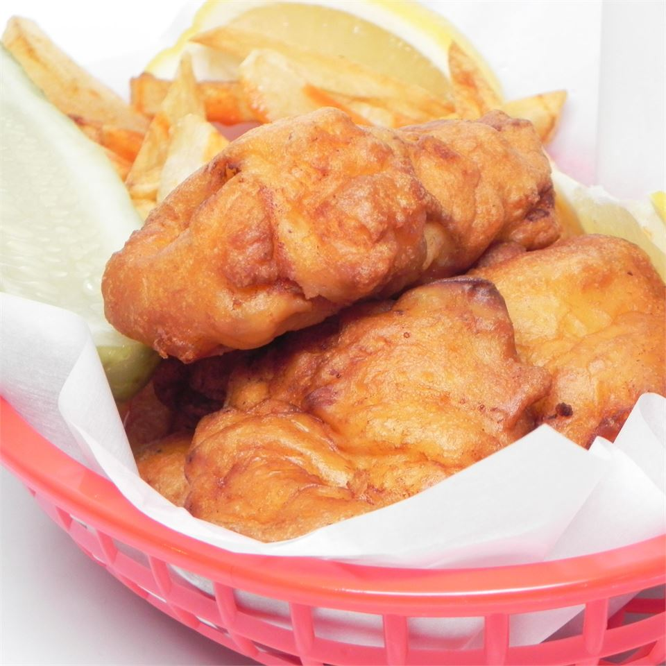

Index
Classic Fish'n Chips

Description
Simple fish and chips recipe for New England's favorite dish.
Tastes great as-is or with malt vinegar, lemon, or tartar sauce.
- Prep: 10 mins
- Cook: 25 mins
- Additionnal: 20 mins
- Total: 55 mins
- Servings: 4
Ingredients
- 4 large potatoes, peeled and cut into strips
- 1 cup all-purpose flour
- 1 teaspoon baking powder
- 1 teaspoon salt
- 1 teaspoon ground black pepper
- 1 cup milk
- 1 egg
- 1 quart vegetable oil for frying
- 1½ pounds cod fillets
Steps
- Place potatoes in a medium bowl and cover with cold water.
- Mix together flour, baking powder, salt, and pepper in a separate medium bowl.
Add milk and egg; stir until batter is smooth. Let stand for 20 minutes.
- Heat oil in a large pot or electric skillet to 350 degrees F (175 degrees C).
- Drain and pat dry potatoes.
Fry in hot oil until tender, about 5 minutes; drain on paper towels.
- Dredge fish in batter, one piece at a time, and place in hot oil. Fry until golden brown or internal temperature reaches 145 degrees F (63 degrees C);
drain on paper towels. Monitor oil temperature, increasing the heat as needed to maintain 350 degrees F (175 degrees C).
- Fry potatoes again in hot oil until crisp, 1 to 2 minutes; drain on paper towels.